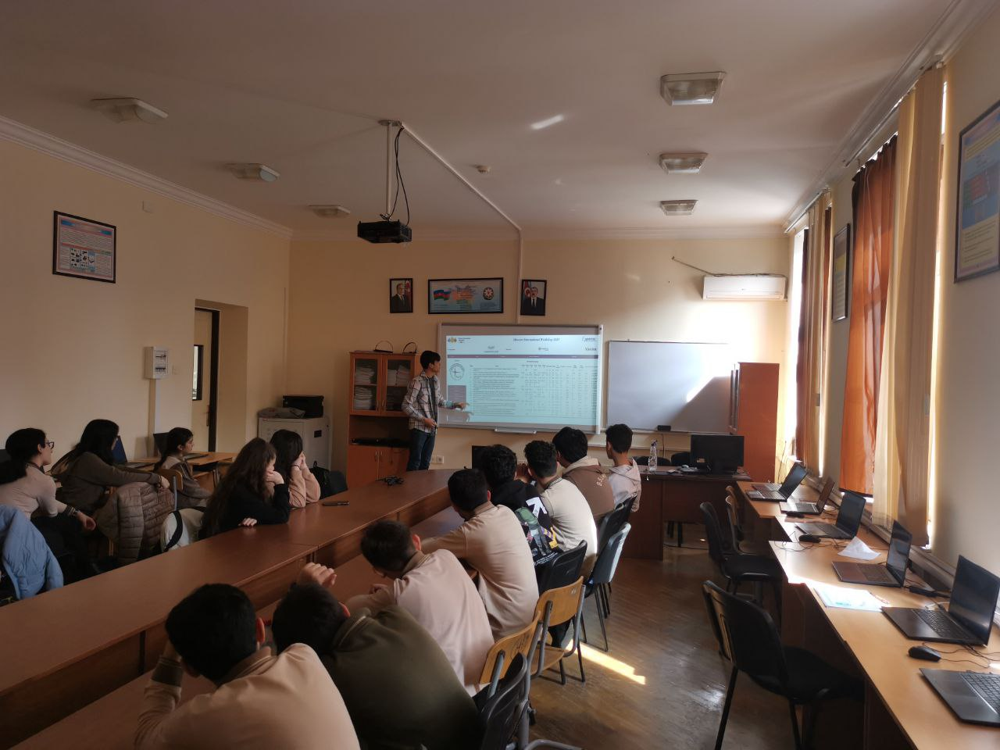
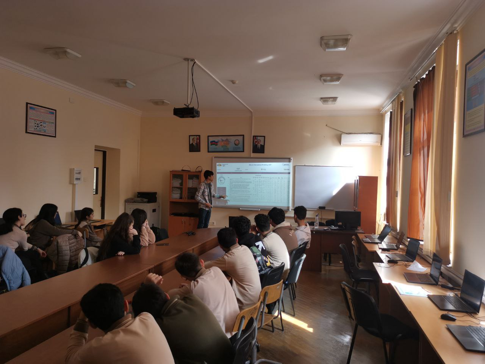
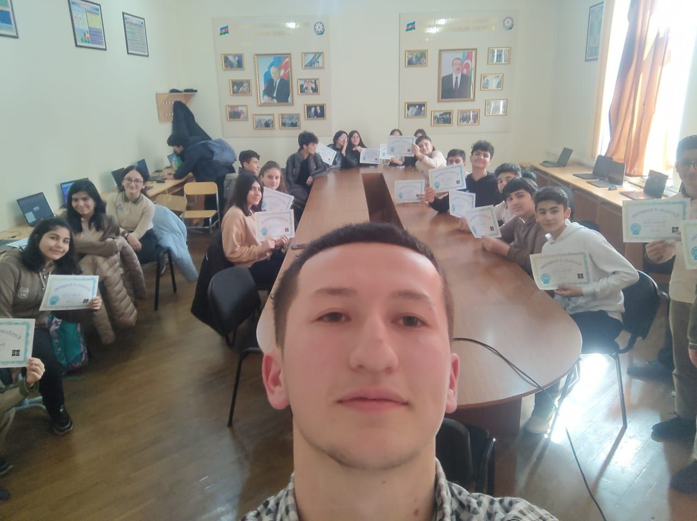
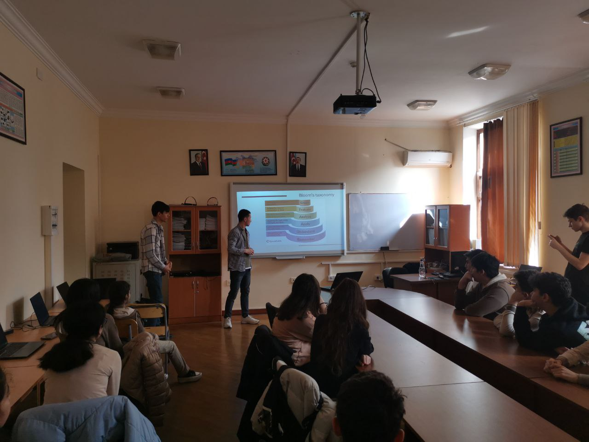
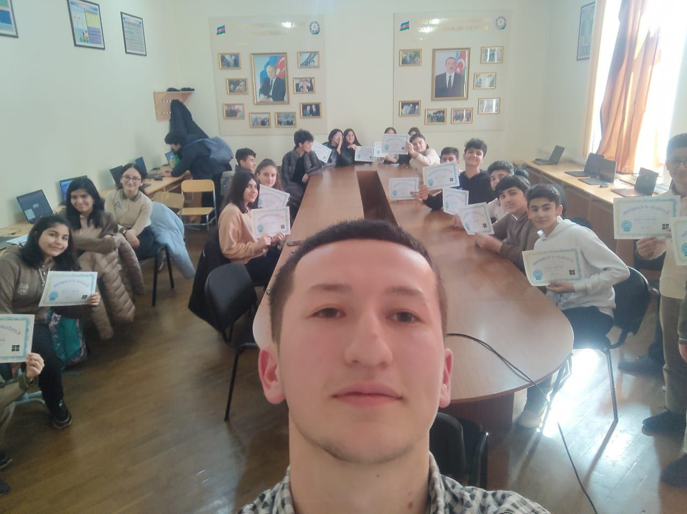
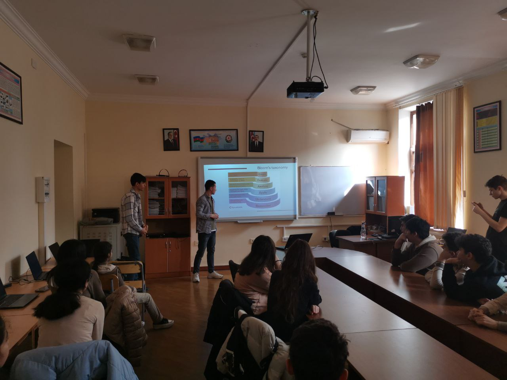
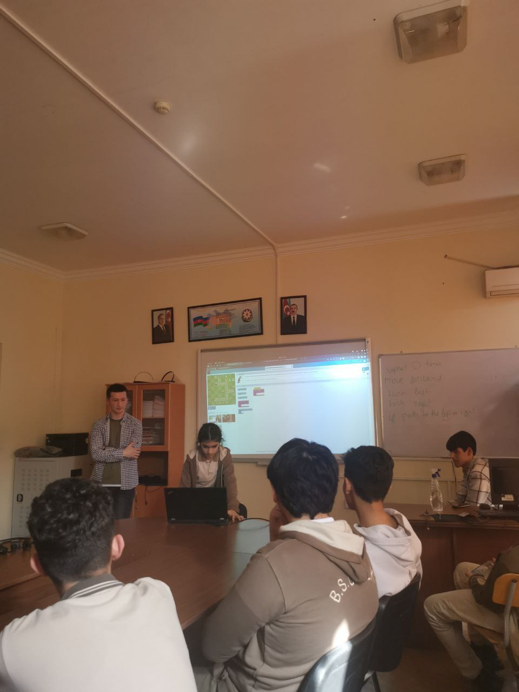
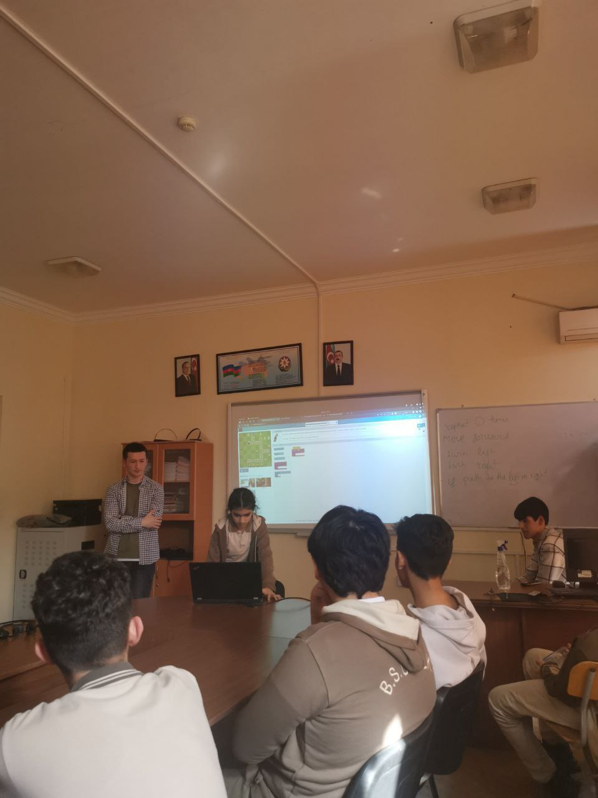

Hour of code is global project which helps student learn how to code with any prior knowledge on programming regardless of their age. Becaus it's accessable to everyone from all around the world, hour of code became global movement to teach children how to code.
On March we also organized our own hour of code event at Baku Slavic University School Lyceum Complex. There were 22 participants who could aquire coding knowledge. It was fun to solve Classic Mazi puzzle all together. Students gave different approaches no a problem. They were such an enthusiastic that wanted to learn more and more. After the event, receiving a certificate made them happiest person in the world.
 


 





 



During the event dividing the each member's jobs made it easy and well organized. At the beginning Elmir presented ADA university. Nex, Asliddin started to teach children how to code He was amazed seeing how such young students knew both English and Russian fluently(Probabely he didn't know any other language than his own at those students' age). All these times Kenan was recording and helping student who were stuggling to understand how programming works. In addition, there were oone more person in pur team who stood all the time as a vounteer. Yunsure is ADA university student who helped to find and contacting with the lyceum princepal. While other group members doing their jobs as planned, Yunsur prepared certificates for students.